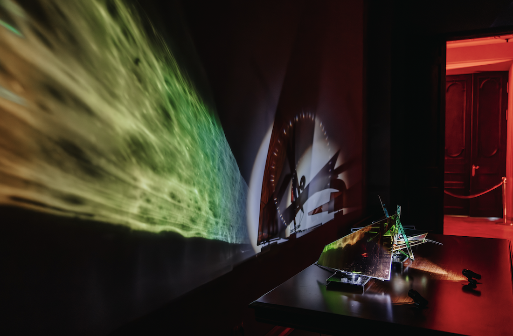
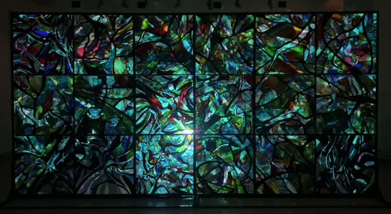
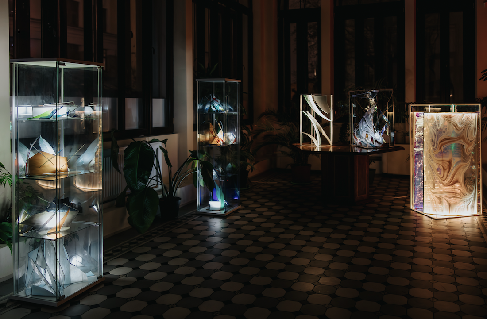
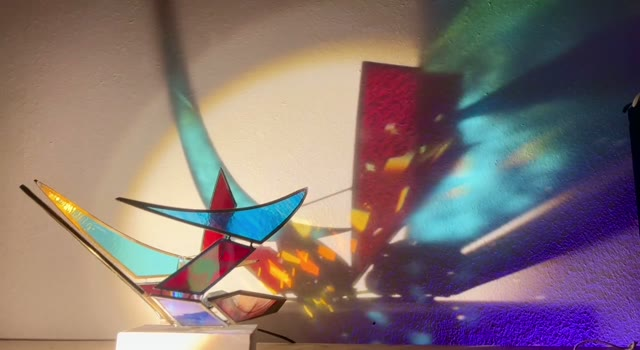

Architecture of Light: Form and Reflections of Reality
The exhibition “Architecture of Light: Form and Reflections of Reality” is an exhibition where architectural forms made by coloured glass act as a means to visualize the physical properties of light - refraction, reflection and dichroism. This exhibition shows how changes in the structure and shape of glass objects can influence the optical effects created by the interaction of light with the material. Each work demonstrates a unique combination of architectural free forms that explore the principles of optical physics. The use of asymmetrical shapes and colored glass allows for complex visual effects, reflecting and scattering light rays into unexpected patterns and shapes. The exhibition aims at its own internal exploration and demonstration of how art objects can interact with space. It is an opportunity to look at optical phenomena through the prism of artistic perception, combining aesthetics with science in the search for new visual and architectural manifestations. Exhibition exploring the interplay between light and colored glass, which together create a visually-optical architecture. Features six kinetic sculptures from summer 2024 utilizing refraction, light reflection, and diffraction. 35 works across 7 halls, uniting static and kinetic sculptures plus stained-glass installations.



